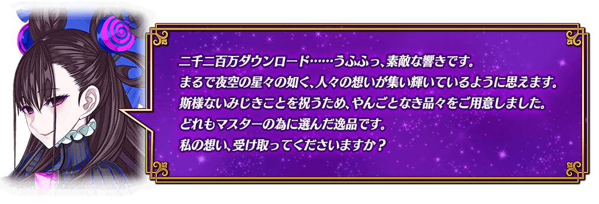
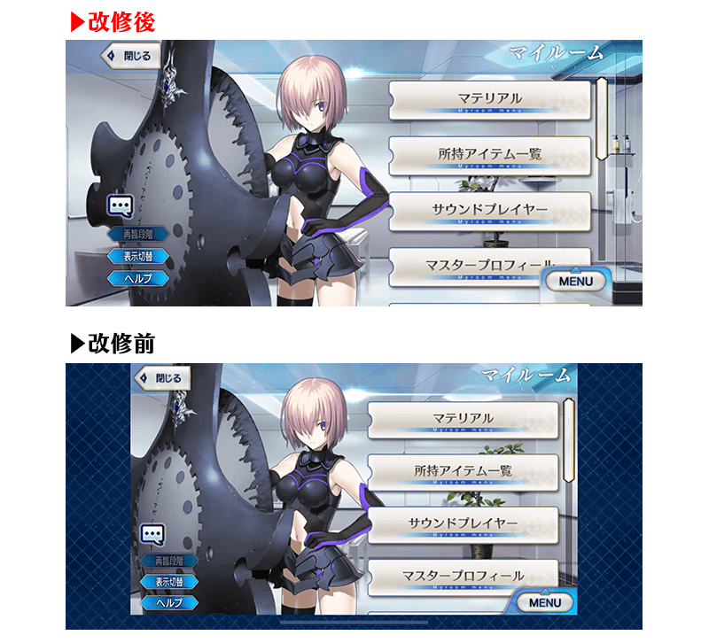
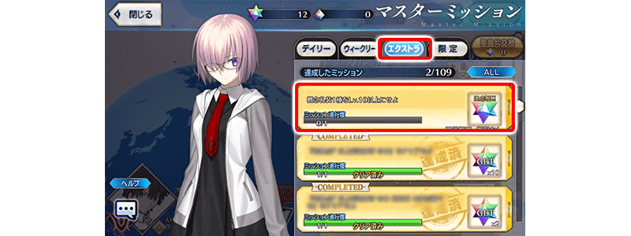
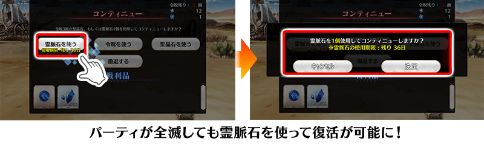
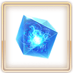
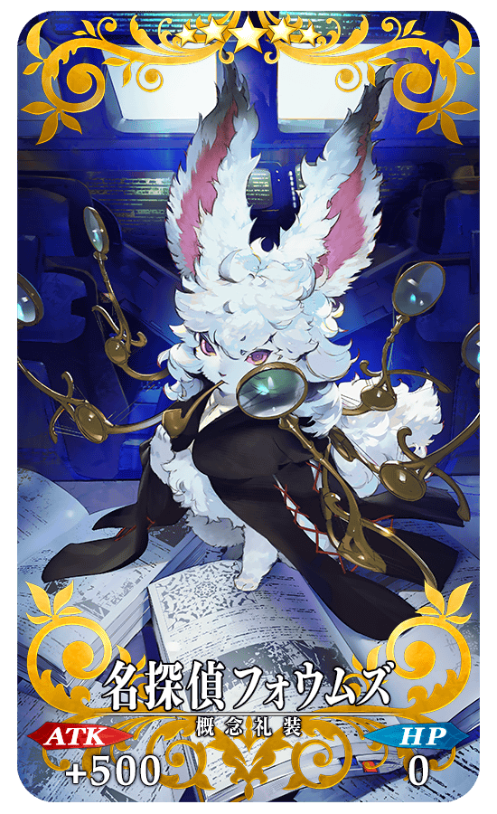
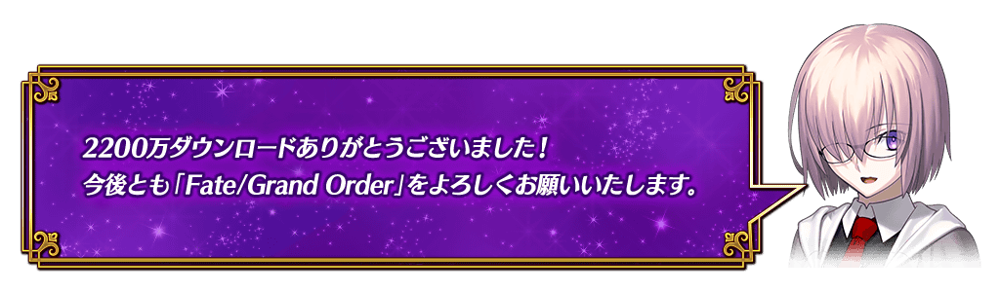

◆舉辦期間◆
2020年11月25日(三) 17:00～12月2日(三) 11:59
※本頁面皆為開發中圖片。會有與實際圖片相異的情況。
「Fate/Grand Order」變得在iPhone X等的一部份裝置也能全螢幕了！
可藉由更多的裝置以全螢幕享受「Fate/Grand Order」的世界！
※關於一部份的裝置仍為非對應。 ※一部份的畫面為全螢幕對應途中。預定將依序推進對應。
◆翻新實施時間◆
2020年11月25日(三) 17:00～


為了記念2200萬DL突破，實施特別登入獎勵。
在下述期間中的話7天內連續登入的話，贈送白銀果實10個、黃金果實10個、睿智的猛火ALL★4(SR)10張、1,000萬QP、英靈結晶・星之芙芙ALL★3(HP)10張、英靈結晶・太陽之芙芙ALL★3(ATK)10張、呼符10張(聖晶石召喚最多11次份)的豪華報酬！

並且，在同期間中登入4次(1天算1次)的話，合送魔力稜鏡200個、英靈結晶・流星之芙芙ALL★4(HP)1張、英靈結晶・日輪之芙芙ALL★4(ATK)1張、稀有稜鏡1個！
◆舉辦期間◆
2020年11月26日(四) 3:00～12月6日(日) 2:59
◆贈送對象◆
2020年12月5日(六) 2:59前通過「特異點F 炎上汙染都市 冬木」的御主對象
※上述時間前，在管理室(ターミナル)畫面的關卡橫幅必須要有「CLEAR」的文字顯示。
【特別連續登入獎勵】
| 登入天數 | 贈送內容 | |
|---|---|---|
| 第1天 |

|
白銀果實 10個 |
| 第2天 |

|
黃金果實 10個 |
| 第3天 |

|
睿智的猛火ALL★4(SR) 10張 |
| 第4天 |

|
1,000萬QP |
| 第5天 |

|
英靈結晶・星之芙芙ALL★3(HP) 10張 |
| 第6天 |

|
英靈結晶・太陽之芙芙ALL★3(ATK) 10張 |
| 第7天 |

|
呼符 10張(聖晶石召喚最多11次份) |
※登入獎勵會在每天3:00配發。 ※連續登入天數中斷後，無法領取之後的禮物。 ※((聖晶石召喚最多11次份)限在同一個聖晶石召喚進行的情況。 ※最多能領取7次，但根據成為贈送對象的時間點，可能無法到此上限。
【特別次數登入獎勵】
| 登入次數 | 贈送內容 | |
|---|---|---|
| 第1次 |

|
魔力稜鏡 200個 |
| 第2次 |

|
英靈結晶・流星之芙芙ALL★4(HP) 1張 |
| 第3次 |

|
英靈結晶・日輪之芙芙ALL★4(ATK) 1張 |
| 第4次 |

|
稀有稜鏡 1個 |
※登入獎勵會在每天3:00配發。 ※合計4天內能領取，但根據成為贈送對象的時間點，可能無法到此上限。

在御主任務(Extra任務)，追加可透過強化概念禮裝到達的Lv.來達成的新任務。
達成所有任務的話，可得到最多20個(聖晶石召喚最多6次份)的聖晶石！
※就算已經將概念禮裝強化到最大的玩家，也能同様地領取通過報酬。
◆翻新實施時間◆
2020年11月25日(三) 17:00～
◆通過報酬的領取方式◆
在御主任務畫面顯示的「Extra(エクストラ)」的項目內，會顯示有關概念禮裝Lv.的任務顯示，請點擊已通過任務來領取達成報酬。

◆追加Extra(エクストラ)任務◆
| 任務名稱 | 任務達成報酬 | |
|---|---|---|
| 1種概念禮裝到Lv.10以上 |

|
聖晶石 1個 |
| 1種概念禮裝到Lv.20以上 |
|
聖晶石 1個 |
| 1種概念禮裝到Lv.30以上 |
|
聖晶石 1個 |
| 1種概念禮裝到Lv.40以上 |
|
聖晶石 1個 |
| 1種概念禮裝到Lv.50以上 |
|
聖晶石 2個 |
| 1種概念禮裝到Lv.60以上 |
|
聖晶石 2個 |
| 1種概念禮裝到Lv.70以上 |
|
聖晶石 3個 |
| 1種概念禮裝到Lv.80以上 |
|
聖晶石 3個 |
| 1種概念禮裝到Lv.90以上 |
|
聖晶石 3個 |
| 1種概念禮裝到Lv.100以上 |
|
聖晶石 3個 |
※就算以前進行靈基變還(販賣)等而現在未持有滿足條件的概念禮裝，滿足條件的情況也會計算任務的進行度。 ※請注意有關在入手時就到達最大Lv.的概念禮裝，不會計算任務的進行度。 ※請注意同一張概念禮裝的第2張Lv.不會計算任務的進行度。

在主線故事(從第1部 序章到第2部 第5.5章)的戰鬥敗北時，可消耗後回歸戰鬥的新道具「靈脈石」做為2200萬DL突破記念宣傳活動的期間限定道具登場！
※11月27日(五) 17:00更新
「靈脈石」在下述期間中，初次登入時會做為登入獎勵領取1遍。
另外，敬請注意「靈脈石」有使用期限，超過使用期限「靈脈石」會消失。
由於不用消耗令咒3劃或聖晶石消耗就能回歸戰鬥，請務必在與主線故事的強敵戰鬥活用！

※「靈脈石」只可在包含亞種特異點的主線故事中使用。 ※敬請注意無法在期間限定活動及Main Interlude使用。
◆能使用的對象關卡◆
主線故事第1部(到終局特異點)
亞種特異點(從Ⅰ到Ⅳ)
主線故事第2部(到第5.5章)
※11月27日(五) 17:00更新
◆道具使用期限◆
2020年11月25日(三) 17:00～12月31日(四) 22:59
◆登入獎勵對象◆
所有的御主對象
※新御主必須推進到通過「特異點F 炎上汙染都市 冬木 第3節 進行度1」。
◆登入獎勵實施期間◆
2020年11月25日(三) 17:00～12月31日(四) 22:59
◆登入獎勵內容◆
| 道具名 | 個數 | |
|---|---|---|
|  | 【2200萬DL宣傳活動限定】 靈脈石 |
3個 |
下述的期間中，在「御主任務」的「限定」標籤內以期間限定追加「【2200萬DL突破記念】任務」。
通過所有任務的話，可得到聖晶石14個(聖晶石召喚最多4次份)、靈脈石7個！
◆舉辦期間◆
2020年11月25日(三) 17:00～12月2日(三) 11:59
◆領取期間◆
2020年11月25日(三) 17:00～12月9日(三) 11:59
◆追加任務◆
| 任務名稱 | 任務達成報酬 | |||
|---|---|---|---|---|
|
【2200萬DL突破記念】 推進第1部＆第2部的主線關卡的進行度1 |
|
聖晶石 2個 | ||
| 靈脈石 1個 | ||||
|
【2200萬DL突破記念】 推進第1部＆第2部的主線關卡的進行度2 |
|
聖晶石 2個 | ||
| 靈脈石 1個 | ||||
|
【2200萬DL突破記念】 推進第1部＆第2部的主線關卡的進行度3 |
|
聖晶石 2個 | ||
| 靈脈石 1個 | ||||
|
【2200萬DL突破記念】 推進第1部＆第2部的主線關卡的進行度4 |
|
聖晶石 2個 | ||
| 靈脈石 1個 | ||||
|
【2200萬DL突破記念】 推進第1部＆第2部的主線關卡的進行度5 |
|
聖晶石 2個 | ||
| 靈脈石 1個 | ||||
|
【2200萬DL突破記念】 推進第1部＆第2部的主線關卡的進行度6 |
|
聖晶石 2個 | ||
| 靈脈石 1個 | ||||
|
【2200萬DL突破記念】 推進第1部＆第2部的主線關卡的進行度7 |
|
聖晶石 2個 | ||
| 靈脈石 1個 | ||||
※請注意舉辦期間與領取期間有所差異。 ※請注意與每週日23:00更新的普通任務(Weekly)不同欄位，超過領取期間的話無法入手報酬。 ※就算達成「【2200萬DL突破記念】任務」，也不會計算在普通任務(Weekly)的任務進行度。 ※已經通過所有主線關卡的情況，任務會自動達成。 ※敬請注意亞種特異點(從Ⅰ到Ⅳ)及Main Interlude為任務對象外。
下述的期間中，主線關卡第2部 第5章 奧林帕斯為止的消耗AP變成1/4！(就算在戰鬥中撤退的情況，也會是同様的消耗量)
尚未通過主線關卡的御主，請務必活用此機會！
◆舉辦期間◆
2020年11月25日(三) 17:00～12月31日(四) 22:59
◆對象關卡◆
主線關卡第1部(從特異點F到終局特異點)
主線關卡第2部(從第1章到第5章 奧林帕斯)
※現在第2部 第5章 亞特蘭提斯為止的消耗AP是永久變成1/2的狀態。因此，宣傳活動結束後，該主線關卡的消耗AP會變成1/2。 ※請注意亞種特異點(從Ⅰ到Ⅳ)、自由關卡為對象外。
下述的期間中，在進行從者及概念禮裝的強化時，大成功(經驗值2倍加成)・極大成功(經驗值3倍加成)發生機率以期間限定變成2倍！
務必藉此機會強化中意的從者和概念禮裝吧！
◆舉辦期間◆
2020年11月25日(三) 17:00～12月2日(三) 11:59
下述的期間中，通過主線關卡第2部 第5章「Lostbelt No.5 星間都市山脈 奧林帕斯 擊落神之日」的話，所有自由關卡初次通過為止的消耗AP變成1/2！(就算在戰鬥中撤退的情況，如果在初次通過關卡前也會是同様的消耗量)
還留有尚未通過自由關卡的御主，請務必藉此機會通過吧！
◆舉辦期間◆
2020年11月25日(三) 17:00～12月2日(三) 11:59
◆宣傳活動對象◆
通過主線關卡第2部 第5章「Lostbelt No.5 星間都市山脈 奧林帕斯 擊落神之日」的御主對象
※不需要通過亞種特異點(從Ⅰ到Ⅳ)。
◆對象關卡◆
第1部(從特異點F到終局特異點)的自由關卡
亞種特異點(從Ⅰ到Ⅳ)的自由關卡
第2部(從第1章到第5章 奧林帕斯)的自由關卡
※初次通過是指入手初次通過報酬的時間點。
以期間限定在迦勒底之門內開放全種類每日出現的關卡「蒐集種火」與「修練場」。
◆舉辦期間◆
2020年11月25日(三) 17:00～12月2日(三) 11:59
※請注意由於以期間限定出現的「蒐集種火」及「修練場」與平常每日出現的「蒐集種火」及「修練場」的關卡不同，不會繼承「關卡情報」。
【全天開放的蒐集種火一覧】
| 關卡名 | 可做為戰利品獲得 的主要道具 |
攻略推薦 職階 |
|---|---|---|
| 【2200萬DL突破記念】 週一 蒐集種火<槍・殺篇> 初級、中級、上級、超級 |
Lancer、Assassin、Berserker的經驗值卡 |   |
| 【2200萬DL突破記念】 週二 蒐集種火<剣・騎篇> 初級、中級、上級、超級 |
Saber、Rider、Berserker的經驗值卡 |   |
| 【2200萬DL突破記念】 週三 蒐集種火<弓・術篇> 初級、中級、上級、超級 |
Archer、Caster、Berserker的經驗值卡 |   |
| 【2200萬DL突破記念】 週四 蒐集種火<槍・殺篇> 初級、中級、上級、超級 |
Lancer、Assassin、Berserker的經驗值卡 | |
| 【2200萬DL突破記念】 週五 蒐集種火<剣・騎篇> 初級、中級、上級、超級 |
Saber、Rider、Berserker的經驗值卡 | |
| 【2200萬DL突破記念】 週六 蒐集種火<弓・術篇> 初級、中級、上級、超級 |
Archer、Caster、Berserker的經驗值卡 | |
| 【2200萬DL突破記念】 週日 蒐集種火<隨機篇> 初級、中級、上級、超級 |
Saber、Archer、Lancer、Rider、Caster、Assassin、Berserker的經驗值卡(隨機) | - |
※Berserker在所有每日關卡皆為有效職階。
【全天開放的修練場一覧】
| 關卡名 | 可做為戰利品獲得 的主要道具 |
攻略推薦 職階 |
|---|---|---|
| 【2200萬DL突破記念】 週一 弓之修練場 初級、中級、上級、超級 |
Archer的靈基再臨用道具、Archer的技能強化素材道具 | |
| 【2200萬DL突破記念】 週二 槍之修練場 初級、中級、上級、超級 |
Lancer的靈基再臨用道具、Lancer的技能強化素材道具 | |
| 【2200萬DL突破記念】 週三 狂之修練場 初級、中級、上級、超級 |
Berserker的靈基再臨用道具、Berserker的技能強化素材道具 | ALL |
| 【2200萬DL突破記念】 週四 騎之修練場 初級、中級、上級、超級 |
Rider的靈基再臨用道具、Rider的技能強化素材道具 |  |
| 【2200萬DL突破記念】 週五 術之修練場 初級、中級、上級、超級 |
Caster的靈基再臨用道具、Caster的技能強化素材道具 | |
| 【2200萬DL突破記念】 週六 殺之修練場 初級、中級、上級、超級 |
Assassin的靈基再臨用道具、Assassin的技能強化素材道具 | |
| 【2200萬DL突破記念】 週日 劍之修練場 初級、中級、上級、超級 |
Saber的靈基再臨用道具、Saber的技能強化素材道具 | |
※Berserker在所有每日關卡皆為有效職階。
為了記念「2200萬DL突破宣傳活動」舉辦，以期間限定在達文西工房的「魔力稜鏡交換」追加下述的概念禮裝。
◆概念禮裝交換期間◆
2020年11月25日(三) 17:00～2021年2月28日(日) 22:59
|
★★★★★SSR |
◆追加道具◆
| 追加道具 | 能交換次數 | 1次交換所需的 魔力稜鏡數 |
|---|---|---|
| 【期間限定】 テイク・ロマンス |
5次 | 1000個 |
為了記念「2200萬DL突破宣傳活動」舉辦，在達文西工房的「稀有稜鏡交換」永久追加『魔力稜鏡交換「名探偵フォウムズ」開放權』。
由於『魔力稜鏡交換「名探偵フォウムズ」開放權』是在「魔力稜鏡交換」開放「★5(SSR)名探偵フォウムズ」的權利，關於實際交換1次需要魔力稜鏡1000個。
◆追加時間◆
2020年11月25日(三) 17:00～
|  |
★★★★★SSR |
◆追加道具(永久)◆
| 追加道具 | 能交換次數 | 1次交換所需的 稀有稜鏡數 |
|---|---|---|
| 魔力稜鏡交換「名探偵フォウムズ」開放權 | 1次 | 1個 |
※追加到「稀有稜鏡交換」的『魔力稜鏡交換「名探偵フォウムズ」開放權』為永久，沒有交換期限。 ※已經交換5張「★5(SSR)名探偵フォウムズ」的玩家，無法交換『魔力稜鏡交換「名探偵フォウムズ」開放權』。 ※關於已經交換1～4張「★5(SSR)名探偵フォウムズ」的玩家，只會開放未交換份。無論能交換張數不會改變必須的稀有稜鏡交換數(已經交換4張的情況只開放1張份)。

其他還有，期間限定「2200萬DL記念Pick Up召喚」舉辦中！
關於詳情，請自下述橫幅確認。
■「2200萬DL記念Pick Up召喚」詳細情報